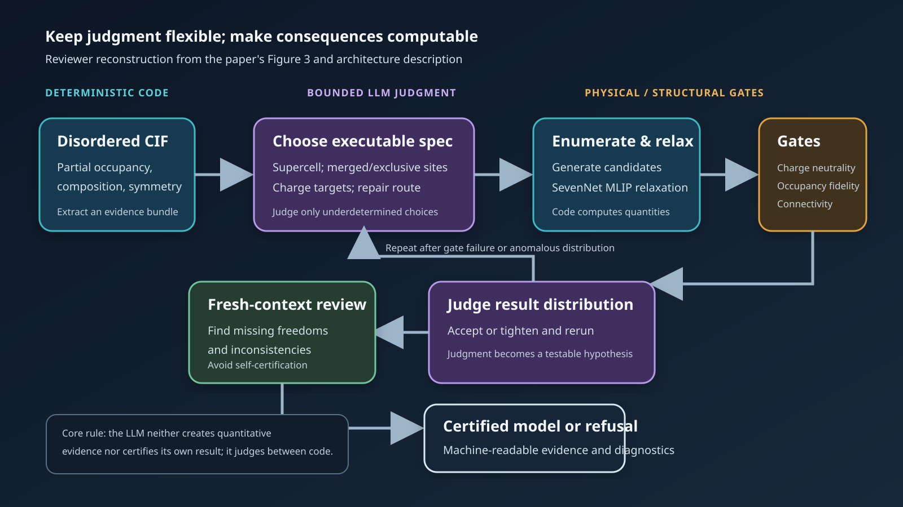

Three-sentence summary
In a preprint posted on 1 September 2026, a Seoul National University team proposes the agentic program: not a general AI scientist, but scientific software that assumes end-to-end responsibility for one verifiable, bounded task. Their case study, DeMARS, converts crystallographic information files (CIFs) with partial occupancies into atomistic models; the authors report maturing the system over roughly 800 disordered CIFs and then running a held-out set of 100 without case-by-case human intervention. The code is not yet public, however, and the paper does not report the certified-versus-refused denominator, repeated-run variability, or an independent external assessment, so the present evidence supports a promising architecture and an internally reviewed case study—not a fully reproduced production system.

Figure 1. AI-generated conceptual illustration. It depicts a partially occupied crystal, candidate branching, physical constraints, and explicit atomistic models. It is not an exact material, a DeMARS interface, or a reproduction of quantitative results.
Why this matters: automation often stops at judgment, not computation
Computational materials science is already heavily automated. Electronic-structure packages execute well-defined calculations, while AiiDA, atomate2, AFLOW, and AMP² manage dependencies, retries, and provenance. Yet researchers still spend substantial time deciding which supercell is commensurate with fractional occupancies, which nearby sites are mutually exclusive, how to impose charge compensation, or whether a failed self-consistent-field calculation calls for a numerical change or a revised physical model.
Traditional automation requires such decisions to be expressed as explicit rules. A general LLM agent offers flexibility, but may vary its decision for the same input or approve an attractive but physically unsound structure. The new paper places a narrower software object between these extremes: use an LLM only for incomplete decision rules that remain after the inputs, outputs, allowed operations, and scientific constraints have been specified.
This is a follow-up, not a restatement, of the May review “AI Scientists at the End of the Beginning”. That article examined verification across broad research workflows, from hypothesis generation to writing. The present study moves in the opposite direction: it restricts autonomy until one responsibility might be delegated completely in routine production.
Terms to define first
- A crystallographic information file (CIF) records lattice parameters, symmetry, atomic positions, species, and occupancies.
- Partial occupancy represents a crystallographic average in which a site is occupied with a probability between zero and one. Most atomistic simulations instead require integer atom counts in an explicit periodic model.
- A disordered crystal contains substitutions, vacancies, interstitials, or coupled occupancy rules that cannot be mapped directly to one periodic arrangement.
- A machine-learning interatomic potential (MLIP) approximates energies and forces learned from first-principles data. It makes the relaxation of many candidates much cheaper than density functional theory (DFT). DeMARS uses the SevenNet family of universal MLIPs, according to the paper.
- An agent harness connects an LLM to files, executable tools, persistent instructions, memory, and reviewer roles.
- In the authors’ definition, an agentic program combines deterministic algorithms and bounded LLM judgment to complete one scientific task whose input, objective, tools, constraints, and acceptance criteria are defined in advance.
Why a disordered CIF requires judgment
Turning partial occupancy into a DFT-ready model is not merely a random vacancy-placement problem. Consider the paper’s $\mathrm{Ca}_{1-x}\mathrm{Th}_x\mathrm{F}_{2+2x}$ example at $x=0.18$. Replacing $\mathrm{Ca}^{2+}$ with $\mathrm{Th}^{4+}$ adds two units of positive charge, so two additional $\mathrm{F}^{-}$ ions are required per Th. The simple check $2+2x=2.36$ matches the refined fluorine composition, but selecting associated interstitial sites and coupled exclusions requires structural and chemical interpretation.
Citing a prior statistical study, the authors state that roughly half of the Inorganic Crystal Structure Database (ICSD) entries are reported as disordered, and that about 60% of the disordered CIFs are relatively simple substitutional solid solutions. More complicated cases can violate charge, composition, or connectivity if each partially occupied site is enumerated independently; the combinatorics may also explode. The hard step is therefore often not sampling more structures, but deciding which chemical model ought to be enumerated.
DeMARS stands for De-averaged Minimal Atomistic Representation System. Its goal is not to recover the unique microscopic “true structure” from diffraction. It constructs a minimal explicit model, or an ensemble of models, consistent with the CIF evidence and chemical rules so that downstream atomistic calculations can proceed. A small periodic cell cannot in general reproduce all spatial and temporal disorder correlations hidden by a crystallographic average.
The core method: place the LLM between programs
The architecture described in the paper can be reduced to seven steps.
- Deterministic Python code extracts composition, occupancy, symmetry, and site evidence from a CIF into a structured bundle.
- An LLM analyst converts that bundle into an executable specification: supercell size, merged or mutually exclusive sites, charge-balanced targets, and whether model repair or custom construction is required.
- An enumeration engine generates candidate arrangements; SevenNet relaxes them and supplies an energy distribution.
- Code checks charge neutrality, fidelity to reported occupancy, polyanion connectivity, and other predefined requirements. Energy above hull is recorded as an interpretive quantity, not as a pass/fail gate.
- The analyst examines the structure and energy distributions, then accepts the result or tightens the specification and reruns the engine.
- A separate reviewer agent audits the final record in a fresh context.
- The program returns either a certified model or an explicit refusal with evidence.

Figure 2. Reviewer-constructed architecture based on the paper’s Figure 3 and textual description. Blue denotes deterministic computation, violet denotes LLM judgment, and amber denotes physical or structural gates. It does not reproduce run logs or measured performance.
The important claim is not that physical knowledge has somehow been absorbed perfectly by the LLM. The model neither creates the quantitative evidence nor certifies its own work. It interprets code-produced evidence, emits a computable specification, and has the consequences checked by independent code. Judgment becomes a hypothesis generator whose outputs can fail.
How this differs from workflows and assistants
| System form | Human responsibility | Software responsibility | Failure control | Human in routine production |
|---|---|---|---|---|
| Conventional workflow | Define every decision rule | Repeat specified algorithms | Exceptions and unit tests | Needed for new exceptions |
| Interactive AI assistant | Ask, choose, and approve | Explain and propose code | User inspection | Always in the loop |
| General AI scientist | Set the objective and supervise | Explore broadly from hypotheses to writing | General evaluators and peer review | Varies by scope |
| Proposed agentic program | Define objective, bounded responsibility, and principles | Execute the bounded task end to end | Task-specific deterministic gates and a separate reviewer | Outside the mature routine loop |
None of the individual components is new: tool-using agents, MLIPs, verification checklists, reviewer agents, and version control already exist. The proposal is to package them as a fully delegable, narrow scientific responsibility. Rather than maximize autonomy over an open domain, it shrinks the task until success and failure can be specified.
The analogy to MLOps and DevOps is strong. A production system validates input contracts, fails closed outside its support envelope, pins versions, and runs regression tests. Scientific correctness, however, extends beyond an API schema to the adequacy of a physical model. Deterministic gates are necessary but cannot be assumed complete.
Quantitative evidence—and the missing denominators
The paper’s largest-scale evidence rests on two counts.
- During development, recurring decisions from roughly 800 disordered CIFs were converted into instructions, diagnostics, verification gates, and deterministic code.
- The mature system processed 100 held-out CIFs end to end without human intervention during execution. These inputs were randomly selected under stated filters: three to five elements, nontrivial site disorder, at most 40 listed sites, and no use during maturation.
The authors manually inspected every output afterward. They report that certified models were chemically reasonable and consistent with the reported disorder, and that every refusal had a reason verifiable from its own record. “Processed 100,” however, does not mean “certified 100.” The paper gives no count of certifications, refusals, custom constructions, or model repairs.
One failure episode is especially informative. In $\mathrm{Sr}_2\mathrm{LiMoO}_{5.5}$, every generated structure passed the existing deterministic gates, yet a reviewer agent noticed that all candidates shared the same cation arrangement. Deterministic ordering in a coupled-enumeration routine had prevented the intended Li/Mo antisite degree of freedom from being sampled. Correcting that routine turned one reviewer-detected failure into a persistent regression improvement.
| Item | Source-reported fact | Independent check in this review | Still unknown |
|---|---|---|---|
| Release | arXiv v1, 1 September 2026 | arXiv metadata and HTML checked | Changes after peer review |
| Maturation set | About 800 disordered CIFs | Internal numerical and case consistency checked | Per-case inputs, outputs, and interventions |
| Held-out test | 100 unused CIFs; no human execution intervention | Filters and post-hoc inspection statement checked | Certification/refusal denominator, success rate, runtime, LLM cost |
| Chemical example | $2+2(0.18)=2.36$ | Charge-compensation arithmetic recalculated | Uniqueness of the microscopic disorder model |
| Software | DeMARS architecture described | Current non-release statement confirmed | Repeated-run stability, model sensitivity, environment reproducibility |
The main limitation: good architecture is not yet a validated product
First, this is a preprint. DeMARS code is promised only upon publication of a peer-reviewed version. A third party cannot yet determine whether the same CIF produces the same construction, refusal, or cost.
Second, the 100-case test lacks the denominators needed to interpret it: certification rate, refusal rate, failure classes, retry counts, evaluator agreement, and a baseline comparison. “Chemically reasonable” is useful expert judgment, but it is not a blind external assessment or a quantitative metric.
Third, stochastic stability is not measured. We do not know how often repeated runs with the same model and different seeds produce the same executable specification, final structural ensemble, and certification decision. Nor do we know the regression rate after changing the LLM, skills, or episodic record. The authors themselves argue for joint versioning and continuing audits.
Fourth, the universal MLIP introduces a separate validity boundary. It makes many inexpensive episodes possible, but energy ordering can fail outside its training distribution—for unusual coordination, charge states, heavy elements, or bonding. Passing composition and connectivity gates does not establish DFT-level relative stability or correct disorder thermodynamics.
Finally, a minimal periodic model may not represent short-range order, configurational entropy, finite-temperature occupancy, or diffuse scattering. DeMARS can provide a plausible starting model without solving the inverse problem uniquely.
Implications for materials research and industrial workflows
For a DFT, OLED, and agentic-workflow practice, the immediate lesson is to avoid starting with an agent that “does all research.” Better targets have clear inputs and deliverables but recurring intermediate judgments.
- A DFT protocol steward could propose pseudopotentials, cutoffs, $k$ meshes, smearing, spin, and spin–orbit coupling, while convergence, symmetry, and magnetic-state checks determine certification.
- A calculation-failure diagnostician could classify self-consistent-field oscillation, charge sloshing, and geometry blow-up from logs, apply only bounded remedies, and stop when energy, force, or occupation regressions fail.
- A defect/interface builder could propose terminations, charge compensation, and passivation while deterministic code checks stoichiometry, neutrality, minimum distances, symmetry, and finite-size conditions.
- An OLED excited-state triage program could combine state character, oscillator strength, spin–orbit coupling, root flipping, and conformer dependence to decide when TDDFT or TDA must be rerun. A rate or mechanism would be certified only when logs and state tracking support it.
- In on-premises research operations, an internal LLM gateway could make bounded decisions while VASP, Gaussian, or Fortran jobs remain under the established scheduler and GitLab runner. Input/output hashes, compiler or container, code commit, model and skill versions, and all gate results should share one evidence record.
Industrial organizations should read “removing the human from the loop” as a responsibility boundary, not simply a staffing claim. Routine runs can be delegated, while a newly discovered failure class triggers human approval of updated principles, code, tests, or doctrines. Useful operating metrics would include certification coverage, false-certification rate, justified-refusal rate, intervention rate, repeated-run agreement, and total cost per certified case across LLM tokens, MLIP/DFT compute, wall time, and retries.
The validation package a follow-up study should publish
The strongest next result would not merely use a larger language model. It would:
- publish the fixed identities and certification/refusal outcomes for the 100 held-out CIFs;
- compare a rule-based baseline, a general tool-using agent, and DeMARS under the same inputs and compute budget;
- repeat each case five to ten times and report variance in specifications, structure clusters, and certification;
- re-relax a stratified subset with DFT and measure preservation of structures and energy ordering;
- use blind rubrics from external crystallographers and computational materials scientists, reporting inter-rater agreement;
- release pinned code, skills, model configuration, and a regression suite spanning version changes; and
- retain refusal and failure artifacts, not just successful structures, to define where the system should not be trusted.
Researchers to watch and seminar questions
- Seungwu Han — Department of Materials Science and Engineering and Research Institute of Advanced Materials, Seoul National University; Center for AI and Natural Sciences, KIAS. Corresponding author with a substantial SevenNet and atomistic-automation program. Question: “How will you expose certification, refusal, and custom-construction denominators, plus repeated-run variance, in a public benchmark?”
- Yunsung Lim — Research Institute of Advanced Materials, Seoul National University. Co-first author presenting the agentic-program concept and DeMARS case. Question: “What criterion decides whether an episode becomes a skill, a doctrine, or deterministic code, and what is the rollback protocol?”
- Haekwan Jeon — Department of Materials Science and Engineering, Seoul National University. Co-first author involved in DeMARS. Question: “Which gate detects when a minimal periodic model is insufficient and an ensemble or explicit short-range order is required?”
Questions to watch
- Is the code released with the peer-reviewed paper?
- Are the detailed outcomes and execution costs for the 100 held-out CIFs disclosed?
- Can another LLM and harness preserve the same responsibility boundary and gates?
- What is the false-certification rate on public datasets and under an independent team?
- Where does MLIP screening become insufficient once the workflow extends to DFT, phonons, defects, and thermodynamics?
- Can research organizations manage episodes as versioned scientific software assets rather than private chat history?
Conclusion
The paper asks a more useful question than whether AI will replace scientists: when can one narrow, repeated act of scientific judgment become software’s responsibility? DeMARS answers by mixing algorithms and judgment while refusing to let the LLM create its own quantitative evidence or certify its own output. The model is a bounded decision-maker between deterministic programs.
Computational materials science is a favorable domain for this design: inputs and deliverables are often explicit; composition, symmetry, charge, forces, and energies provide computable constraints; and MLIPs reduce the cost of accumulating episodes. Those advantages also raise the evidentiary bar. Once the code is public, evaluation denominators are disclosed, and repeatability and external validation are demonstrated, the “agentic program” could move from an interesting concept to a credible new category of scientific software.
References
- Y. Lim, H. Jeon, J. Kim, J. Kim, S. Han, “Agentic programs: an emerging form of scientific software in computational materials science,” arXiv:2609.00795v1 (1 September 2026). Primary source; preprint; DeMARS code not yet released.
- D. Antypov et al., “Classification and statistical analysis of structural disorder in crystalline materials,” Journal of Applied Crystallography 58, 659–677 (2025). Source for the ICSD disorder taxonomy.
- A. M. Ganose et al., “atomate2: modular workflows for materials science,” Digital Discovery 4, 1944–1973 (2025). Context for deterministic workflow automation.
- Y. Park et al., “A robust agentic framework for expert-level automation of atomistic simulations,” arXiv:2606.09422 (2026). Earlier atomistic-agent work from the related research ecosystem.
- J. Kim et al., “Optimizing cross-domain transfer for universal machine learning interatomic potentials,” Nature Communications 17, 3432 (2026). Background for the SevenNet-family MLIP used by DeMARS.
- J. Gottweis et al., “Accelerating scientific discovery with Co-Scientist,” Nature 655, 487–496 (2026). Comparison with a broad AI co-scientist.
- Google Research, “Science One Framework: A verifiable autonomous research framework via Chain-of-Evidence” (30 July 2026). Comparison for claim-to-code-to-log linkage and independent reruns.
- Z. Chen et al., “An agentic artificially intelligent X-ray scientist,” Nature Machine Intelligence 8, 1075–1086 (2026). Comparison for virtual-to-real instrumentation and a human-relay safety boundary.
Evidence cutoff: 6 September 2026. The architecture and counts of roughly 800 and 100 CIFs are source-reported; this review did not execute DeMARS. Independent checks were limited to arXiv metadata, internal numerical and chemical consistency, current code availability, cited official or peer-reviewed context, and final-page rendering. Proposed applications and operating metrics are editorial interpretations.